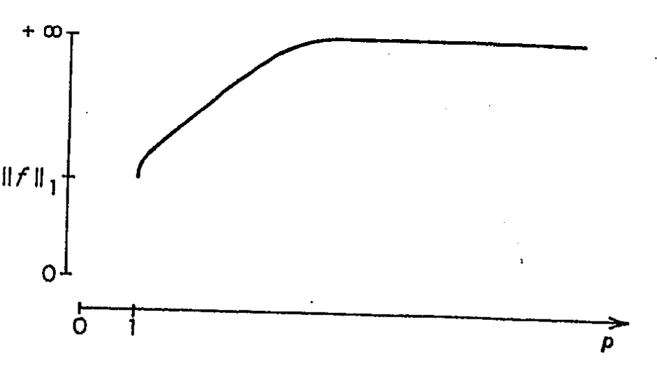

Exercícios
Provar que, se \(\sum\limits_{i=1}^n a_i I_{A_i} = \sum\limits_{j=1}^m b_j I_{B_j}\), então \(\sum\limits_{i=1}^n a_i\mu(A_i) = \sum\limits_{j=1}^m b_j\mu(B_j)\).
Provar a Prop. 4.1.1.
Provar a Prop. 4.1.2. (usar a Prop. 2.4.1.).
Provar a Prop. 4.1.5.
Provar o Cor. 4.1.3.
Provar a Observação 1) correspondente ao Teor. 4.2.1.
Provar o Cor. 4.2.3.
Seja \(\Omega = (0, +\infty)\), \(\mathscr{A} = \text{borelianos}\) e \(\lambda\) a medida de Lebesgue em \((0, +\infty)\). Seja \[f_n(x) = \frac{1}{n} I_{[n, 2n]}(x)\] \[f(x) = 0 \forall x \in (0, +\infty).\] Verificar que \(f_n \in L_1\), \(f \in L_1\), \(f_n\) converge uniformemente a \(f\), mas \(f_n \not\xrightarrow{L_1} f\).
Seja \(\Omega = [0, 1]\), \(\mathscr{A} = \text{borelianos}\) e \(\lambda\) a medida de Lebesgue de \([0, 1]\). Seja \(f_n = n I_{[1/n, 2/n]}\) e \(f \equiv 0\). Então \(f_n \in L_1, f \in L_1, f_n \xrightarrow{\text{q.t.p.}} f\) mas \(f_n \not\xrightarrow{L_1} f\).
Provar que as funções \[f(x)=\int_{-\infty}^x I_{[0, +\infty)}(y)e^{-y} dy\] e \[g(x) = \int_{-\infty}^{\sqrt{\cos(x_1^2)+\cos(x_2^2)+\operatorname{sen} x_3}} I_{[0, +\infty)}(y)e^{-y} dy\] são \(\mathscr{R}^1\) e \(\mathscr{R}^3\) mensuráveis respectivamente.
Seja \((\Omega, \mathscr{A}, \mu)\) um espaço de medida finito. Se \(\mathscr{F}\) é uma família de funções uniformemente absolutamente contínua, então \(\mathscr{F}\) é equicontínua superiormente ao vazio.
Seja \((\Omega, \mathscr{A}, \mu)\) um espaço de medida com \(\mathscr{A}\) separável. Então \(L_p\) para \(1 \leq p < \infty\) é separável.
Se \(f_n\) é uma sequência fundamental em \(L_1(\Omega, \mathscr{A}, \mu)\) então \(\forall A \in \mathscr{A}\), \(\nu(A) = \lim\limits_{n \to \infty} \int_A f_n d\mu\) existe, e é uma função de conjunto finita e \(\sigma\)-aditiva.
Provar que em \(L_p(\mathbb{R}^1, \mathscr{R}, \lambda)\), \(1 \leq p < \infty\), as seguintes classes de funções são densas:
As funções contínuas de \(L_p\).
As funções contínuas com suporte compacto.
As funções da forma \(I_{[-a,a]}(x) P(x)\), em que \(a\) é real não-negativo e \(P(x)\) é um polinômio em \(x\).
Seja \(\Omega = \mathbb{N} = \{1, 2, \ldots\}\), \(\mathscr{A}\) a \(\sigma\)-álgebra de partes de \(\Omega\) e \(\mu\) a medida da contagem. Provar:
Se \(f \geq 0\), então \(\int f d\mu = \sum\limits_{n=1}^\infty f(n)\).
\(f\) é integrável se, e somente se, \(\sum\limits_{n=1}^\infty |f(n)| < \infty\) e nesse caso \[\int f d\mu = \sum\limits_{n=1}^\infty f(n).\]
Seja \((\Omega, \mathscr{A}, \mu)\) um espaço de medida finito, \(f_n \geq 0\), \(f_n\) converge uniformemente a \(f\). Então \(f \geq 0\) e \[\int f_n d\mu \to \int f d\mu.\]
Seja \((\Omega, \mathscr{A}, \mu)\) um espaço de medida \(f_n \geq 0, f \geq 0, f_n \xrightarrow{\text{q.t.p.}} f\) e \(\lim \int f_n = \int f < \infty\). Então \(f_n \xrightarrow{L_1} f\). (Sugestão. Use as identidades \[f_n+f = f_n \vee f + f_n \wedge f\] e \[|f_n-f| = (f_n \vee f)-(f_n \wedge f)).\]
Dar um contra-exemplo ao exercício anterior para o caso \[\lim_{n \to \infty} \int f_n = \int f = \infty \quad \text{e} \quad \mu(\Omega) < \infty.\]
Se \(f\) é uma função integrável sobre \((\Omega, \mathscr{A}, \mu)\), então o conjunto \([f \neq 0]\) tem medida \(\sigma\)-finita.
A mesma conclusão é válida, se \(f \in L_p, 1 \leq p < \infty\).
Se \(f \in L_1(\Omega, \mathscr{A}, \mu)\), então \(\forall \varepsilon > 0\), existe \(A \in \mathscr{A}\) com \(\mu(A) < \infty\), tal que \[\left|\int_\Omega f d\mu - \int_A f d\mu\right| < \varepsilon.\]
Provar as sete afirmações contidas na Prop. 4.3.3.1.
Seja \(f\) uma função integrável sobre o espaço de probabilidades \((\Omega, \mathscr{A}, \mu)\). Provar que \[e^{\int_\Omega f d\mu} \leq \int_\Omega e^f d\mu.\]
(Sugestão. Use a Desigualdade de Jensen).
Seja \(\{\alpha_n\}_{n=1,2,\ldots}\) uma sequência de números não-negativos, tais que \(\sum\limits_{i=1}^\infty \alpha_i = 1\). Seja \(\{a_n\}_{n=1,2,\ldots}\) uma sequência de números positivos. Então \[\prod\limits_{n=1}^\infty a_n^{\alpha_n} \leq \sum\limits_{n=1}^\infty \alpha_n a_n.\]
(Sugestão. Use a Desigualdade de Jensen).
Provar a Prop. 4.3.1.1.
Seja \(A\) o conjunto dos racionais de \([0, 1]\). Então \(I_A\) é integrável Lebesgue e não é integrável Riemann.
Seja \(\{f_n\}\) uma sequência de funções integráveis sobre \((\Omega, \mathscr{A}, \mu)\) e \(f\) uma função integrável, tal que \(\left\|f_n-f\right\|_1 \to 0\). Então \(\left\|f_n\right\|_1 \to \left\|f\right\|_1\).
Se \(f_n\) e \(f\) pertencem a \(L_p, 1 \leq p < \infty\) e \(f_n \xrightarrow{\mu} f\), então \(\left\|f_n\right\|_p \to \left\|f\right\|_p\).
Se uma função \(f \in L_p(\Omega, \mathscr{A}, \mu)\), \(1 \leq p < \infty\), então \[\lim_{a \to \infty} \mu([|f| \geq a]) = 0.\]
Seja \((\Omega, \mathscr{A}, \mu)\) um espaço de medida finito, \(f\) uma função real mensurável e \(A_n = [n-1 \leq |f| < n], n = 1, 2, \ldots\). Então \(f \in L_p(\Omega, \mathscr{A}, \mu)\), \(1 \leq p < \infty\), se e somente se, \(\sum\limits_{n=1}^\infty n^p\mu(A_n) < \infty\).
Consideremos em \(([0, 1], \mathscr{B}, \lambda)\) a função \(f(x) = \frac{1}{x} I_{(0, 1]}(x)\). Seja \(f_n = f I_{(0, 1/n)}\). Então \(0 \leq f_n \downarrow 0\), mas \[\int_{[0, 1]} f_n dx \not\to 0.\]
Seja \((\Omega, \mathscr{A}, \mu)\) um espaço de medida finito. Seja \(m(\Omega, \mathscr{A})\) o espaço de todas as funções reais \(\mathscr{A}\)-mensuráveis. Definimos para \(f\) e \(g \in m(\Omega, \mathscr{A})\) \[d(f, g) = \int_\Omega \frac{|f-g|}{1+|f-g|} d\mu.\]
Seja \((\Omega, \mathscr{A}, \mu)\) um espaço de medida. Seja \(f\) uma função mensurável. Definimos: \[m(f) = \sup\left\{a: \mu\left(\left[f < a\right]\right) = 0\right\};\] \[M(f) = \inf\left\{a: \mu\left(\left[f > a\right]\right) = 0\right\}.\] Seja agora \(f \in \mathscr{L}_\infty(\Omega, \mathscr{A}, \mu)\) e \(g \in L_1(\Omega, \mathscr{A}, \mu)\) com \(g \geq 0\). Provar a desigualdade (chamada da média) \[m(f) \int_\Omega g d\mu \leq \int_\Omega fg d\mu \leq M(f) \int_\Omega g d\mu.\] (Esta desigualdade é também chamada primeira fórmula da média).
Seja \((\Omega, \mathscr{A}, \mu)\) um espaço de medida. Provar que \(\mu\) é \(\sigma\)-finita se, e somente se, existe \(f: \Omega \to (0, +\infty)\), tal que \(\int_\Omega f d\mu < \infty\).
Provar que as funções simples são densas em \(L_\infty\).
Seja \((\mathbb{N}, \mathbb{P}(\mathbb{N}), \#)\) como no Exerc. 20 do Cap. 2. Seja \(f: \mathbb{N} \to \mathbb{R}^1\), tal que \(f(2k) = \frac{1}{k}, f(2k-1) = -\frac{1}{2^k} k = 1, 2, \ldots\). É \(f\) integrável? É \(f\) quase-integrável?
Considere o espaço de medida \((\mathbb{R}^1, \wedge, \lambda)\), em que \(\lambda\) é a medida de Lebesgue em \(\mathbb{R}^1\). Seja \(c > 0\) e \(f_n = \frac{1}{n} I_{[n, n+c]}\). Provar
- \(f_n \in L_p, 1 \leq p \leq \infty\)
- \(\{f_n\}_{n=1,2,\ldots}\) é fundamental (Cauchy) em \(L_p(1 \leq p \leq \infty)\)
- Qual é o limite de \(\{f_n\}_{n=1,2,\ldots}\) em \(L_p\)? \((1 \leq p \leq \infty)\)
- Converge \(\{f_n\}_{n=1,2,\ldots}\) uniformemente a esse limite?
Consideremos o espaço de medida \(([0, 1], \mathscr{B}, \lambda)\) (onde \(\mathscr{B}\) é a \(\sigma\)-álgebra de Borel e \(\lambda\) a medida de Lebesgue). Para cada subconjunto finito \(J = \{x_1, x_2, \ldots, x_n\} \subseteq [0, 1]\), consideremos a função \(I_J\). A família \(\{I_J\}_{J \subseteq [0, 1]}\) é uma sequência generalizada (rede), tal que \(I_J \uparrow I_{[0, 1]}\) mas \(\int_{[0, 1]} I_J d\lambda \not\uparrow 1\). Ou seja, o Teorema da Convergência Monótona não é válido para redes.
Prove que a função \(f(x) = \frac{1}{x^2}\) é integrável em relação à medida de Lebesgue em \([1, +\infty)\), mas não é integrável em relação à medida de Lebesgue-Stieltjes gerada por \(F(x) = x^3\).
Em \((\mathbb{R}^1, \wedge, \lambda)\), seja \(\{f_n\}_{n=1,2,\ldots}\) uma sequência de funções mensuráveis tais que \(f_n \xrightarrow{\text{q.t.p.}} f\). Provar que: \[\int_{\mathbb{R}^1} e^{-|x|} \operatorname{sen}(f_n(x)) dx \to \int_{\mathbb{R}^1} e^{-|x|} \operatorname{sen}(f(x)) dx.\]
Seja \((\Omega, \mathscr{A}, \mu)\) um espaço de medida finito. Provar que se \(1 \leq p \leq q\), então \(L_q \subseteq L_p\).
Em \(([0, 1], \mathscr{B}, \lambda)\) a função \(f(x) = \frac{1}{\sqrt{x}} I_{(0, 1]}(x)\) pertence a \(L_1\) mas não a \(L_2\). Ou seja, a inclusão contrária está estabelecida no Exerc. 40 não é verdadeira.
Em \(([1, +\infty), \mathscr{B}, \lambda)\) a função \(f(x) = \frac{1}{x}\) pertence a \(L_2\) mas não a \(L_1\). Ou seja, o resultado do Exerc. 40 não é válido se o espaço de medida não é finito.
Seja \((\Omega, \mathscr{A}, \mu)\) um espaço de probabilidades. Se \(f\) é mensurável, provar que a função \[p \mapsto \left\|f\right\|_p, \quad 1 \leq p < \infty\] é uma função não-decrescente.
(Sugestão. Seja \(1 \leq q < p\). Seja \(r\), tal que \(\frac{1}{p} + \frac{1}{r} = \frac{1}{q}\). Portanto \(\frac{q}{p} + \frac{q}{r} = 1\). Substitua agora na desigualdade de Hölder \(f, g, p \text{ e } q \text{ por } |f|^q, 1, \frac{p}{q}, \text{ e } \frac{r}{q})\). Dê um contra-exemplo para o caso em que \(\mu\) não seja uma probabilidade.
Nas condições do Exerc. 43, prove que a função \[p \mapsto \left\|f\right\|_p\] é contínua em todo ponto que ela é finita. Se \(\left\|f\right\|_p = \infty\), então \(\left\|f\right\|_p \uparrow \infty\) (\(q < p\)). Note que uma consequência dos Exercs. 43 e 44, é que o gráfico da função \(p \mapsto \left\|f\right\|_p\) é o seguinte:
 É possível que para todo \(p\), \(\left\|f\right\|_p < \infty\); em qualquer caso sabemos que \(\lim_{p \to \infty} \left\|f\right\|_p = \left\|f\right\|_\infty\). (Sugestão. Se \(\left\|f\right\|_p < \infty\), seja \(q < p\). Para provar que a função é contínua em \(q\) tome \(r < p\) e observe que \[|f|^r \xrightarrow{\mu} |f|^q\] e que \(|f|^r \leq (1 \vee |f|^p) \in L_1\). O resultado decorre agora usando o Teorema da Convergência Dominada. Se \(\left\|f\right\|_p = \infty\), use o resultado obtido na função \(|f|I_{[|f| \leq n]}\). Depois passe ao limite quando \(n \to \infty\)).
Seja \(f\) uma função integrável em relação à medida de Lebesgue em \([a, b]\). Prove que existe uma sequência de funções-escada \(\{\varphi_n\}_{n=1,2,\ldots}\) tal que \(\varphi_n \to f\) em q. t. p.
(Sugestão. Se \(a \leq x_0 < x_1 < \ldots < x_n = b\) e \(\varepsilon_1, \varepsilon_2, \ldots, \varepsilon_n\) são números reais, então \(\sum\limits_{i=1}^n \varepsilon_i I_{(x_{i-1}, x_i]}\) é uma função-escada. Estas funções são densas em \(L_p, 1 \leq p < \infty\) pela Prop. 4.2.7. Dada então \(f \in L_1([a, b], \wedge, \lambda)\), existe uma sequência \(\{\varphi_n\}_{n=1,2,\ldots}\) de funções-escada, tal que \(\varphi_n \xrightarrow{L_1} f\). Então \(\varphi_n \xrightarrow{\mu} f\). Pelo Cor. 3.5 existe então uma subsequência que converge em q. t. p.)
Provar que se \(A\) é um conjunto mensurável Lebesgue, tal que \(\lambda(A) > 0\), então existe \(B \subseteq A\), não-mensurável Lebesgue.
(Sugestão. Restringir a relação de equivalência \(\sim\) definida antes da Prop. 4.3.4.2 ao conjunto \(A\) e repetir o argumento dessa proposição).
Seja \(f \in L_p([a, b], \Lambda, \lambda)\) com \(1 < p < \infty\). Seja \[F(x) = \text{cte.} + \int_a^x f(y) dy\] e \(a = x_0 < x_1 < \ldots < x_n = b\). Prove que \[\sum_{i=0}^{n-1} \frac{|F(x_{i+1})-F(x_i)|^p}{(x_{i+1}-x_i)^{p-1}} \leq \int_a^b |f(y)|^p dy.\] (Sugestão. Use a desigualdade de Hölder para provar que \[|F(x_{i+1})-F(x_i)| \leq (x_{i+1}-x_i)^{1/q} \left(\int_{x_i}^{x_{i+1}} |f(y)|^p dy\right)^{1/p}.\]
Podemos nos restringir ao caso em que \(\varphi\) esteja definida num intervalo \([0, c]\). Neste caso provaremos que \[xy \leq \int_0^x \varphi(s) ds + \int_0^y \psi(t) dt, \quad x \in [0, c] \quad y \in [0, \varphi(c)].\] A igualdade vale se, e somente se, \(y = \varphi(x)\).
Demonstração. Utilizando o Exerc. 2 do Cap. 5, decorre imediatamente que \[\forall x \in [0, c], x\varphi(x) = \int_0^x \varphi(s) ds + \int_0^{\varphi(x)} \psi(t) dt.\] Portanto, para provar o resultado, é suficiente provar que, se \(y \neq \varphi(x)\) \[xy < \int_0^x \varphi(s) ds + \int_0^y \psi(t) dt.\]
Suponhamos \(y > \varphi(x)\). Como \(\psi\) é estritamente crescente se \(t \in (\varphi(x), y)\), \(x < \psi(t)\), e portanto \[\int_{\varphi(x)}^y \psi(t) dt > x(y-\varphi(x)).\] Então \[xy = x\varphi(x) + x(y-\varphi(x)) < \int_0^x \varphi(s) ds + \int_0^{\varphi(x)} \psi(t) dt +\] \[+ \int_{\varphi(x)}^y \psi(t) dt = \int_0^x \varphi(s) ds + \int_0^y \psi(t) dt.\] Se \(y < \varphi(x)\), temos \[\int_y^{\varphi(x)} \psi(t) dt < x(\varphi(x)-y)\] e portanto \[xy = x\varphi(x)-x(\varphi(x)-y) < \int_0^x \varphi(s) ds +\] \[+ \int_0^{\varphi(x)} \psi(t) dt - \int_y^{\varphi(x)} \psi(t) dt = \int_0^x \varphi(s) ds + \int_0^y \psi(t) dt,\] o que prova o resultado.